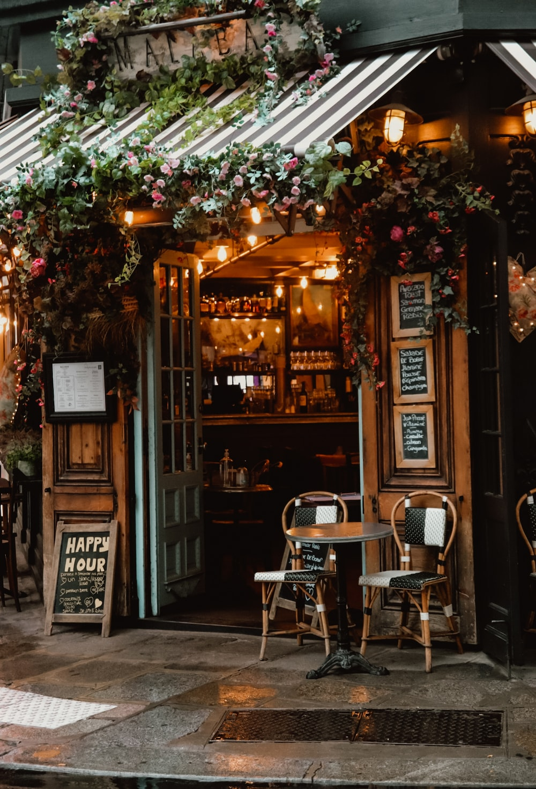
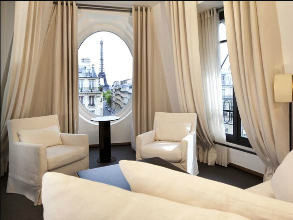
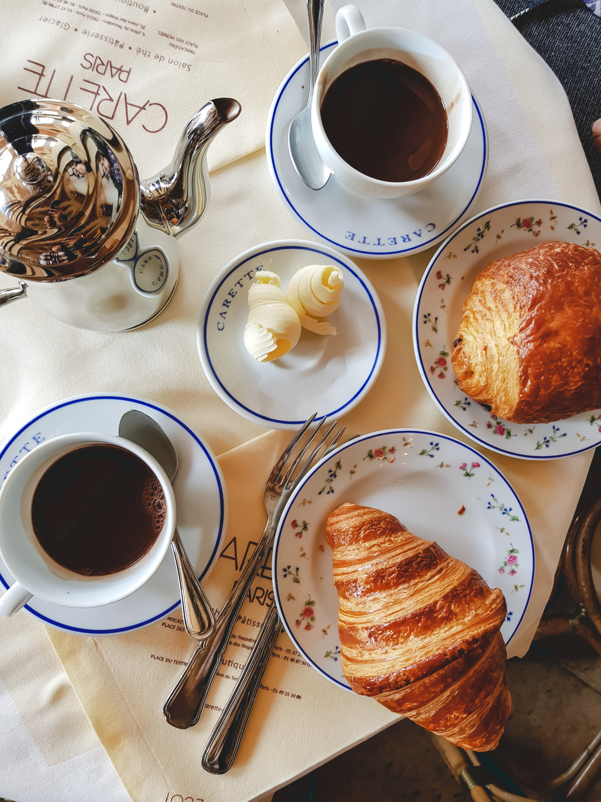
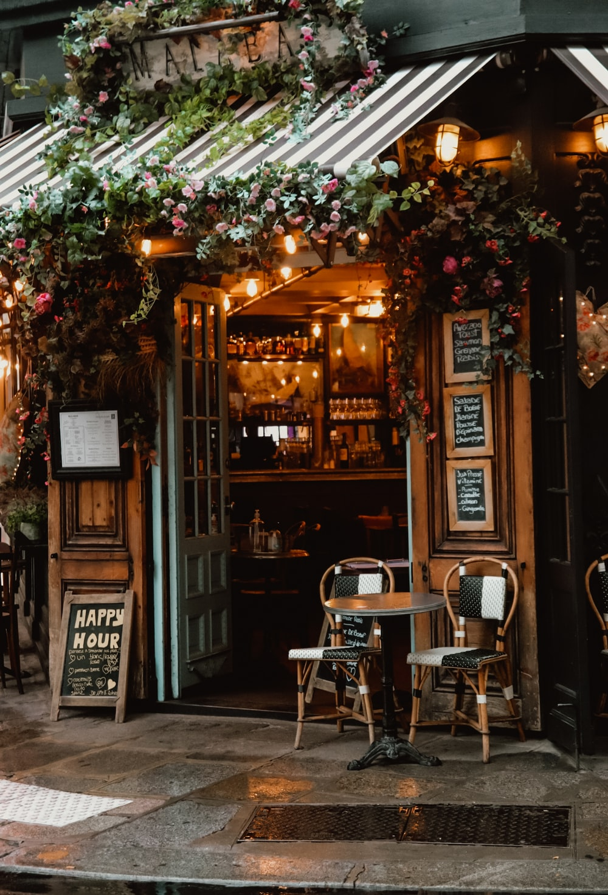
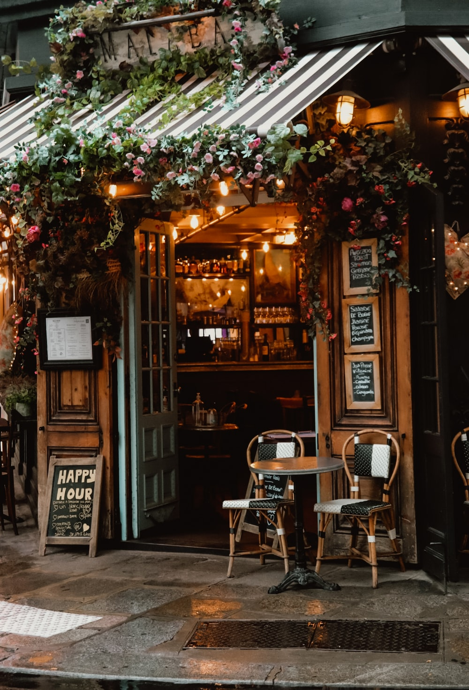

Ask any group of world travelers what the most beautiful city in the world is, and chances are Paris takes the prize. Perhaps you agree (or should find out for yourself). Even better for you are the special amenities and VIP treatment we can offer at some of the city’s finest hotels. While Paris makes for a perfect vacation estination on its own, there’s far, far more to France than just Paris, and we can take you there.

.
France , officially the French Republic , is a transcontinental country spanning Western Europe and overseas regions and territories in the Americas and the Atlantic, Pacific and Indian Oceans.Its metropolitan area extends from the Rhine to the Atlantic Ocean and from the Mediterranean Sea to the English Channel and the North Sea; overseas territories include French Guiana in South America, Saint Pierre and Miquelon in the North Atlantic, the French West Indies, and several islands in Oceania and the Indian Ocean. Due to its several coastal territories, France has the largest exclusive economic zone in the world.
With the City of Lights there are so many fantastic things to see and do. To truly experience France means going beyond the standard tourist activities and sights as you venture into the French countryside. Those who travel beyond Paris may be surprised to find beautiful, pastoral farmland; rugged northern coastlines; spectacular wine-country; soaring Alps; and a pastel-painted southern coast. Explore museums, castles, chateaux, or Roman-era ruins while you’re there, and fully appreciate everything this country has to offer.
The whole of France is available to travelers by rail or by road. Trains are available to take you to nearly every small village, medium-sized town, and large city in the whole of the country. Renting a car can be advisable if you have special needs or if you require greater flexibility than the French rail system can deliver, but it is rarely necessary for a vacation. Of course, TravelStore can arrange for your rail tickets in advance, as part of your trip arrangements, as well as private car and driver to pre-arrange airport transfers, or a day of touring in the country or city with a qualified and knowledgeable guide who can enhance your experience.
France experiences the standard four seasons that most North Americans are familiar with. It snows in the northern and more mountainous parts of the country in the winter, rains everywhere but the south in the spring and fall, and is sunny and warm during the summer. The temperatures inland of the Cote d’Azur, or French Riviera, can be very high in the summer months, however, and along the Northern coast, summer temperatures can be surprisingly low. So depending on your itinerary, pack for the weather that you’re likely to encounter.
France is a country near obsessed with the quality of the food and drink it consumes, with the art it views, and in general, with the culture that is, well, French. To experience France is to immerse yourself in the terroir of the place. Tour the vineyard; taste the wine; buy the cheese direct from the purveyor at the open air market. Enjoy the party-like atmosphere of the bistro, the calm sophistication of the café tabac, or the sidewalk café.


.
Resorts & Hotels in France
France has abundant accommodations in just about every price range. The South of France is home to many beach-facing or beachfront hotels, and Paris is home to some of the best, most luxurious hotels anywhere in the world. At more than two dozen of our hand-picked hotels and resorts, we extend special amenities to travelers, including:
.
PARIS
Le Meurice
Le Meurice has held sway as the jewel in the crown of French luxury hotels since 1835.
PAYS DE LOIRE
Chateau de La Barre
Enjoy the hospitality of Count & Countess de Vanssay at their 100-acre family estate.
SAINT-TROPEZ
Byblos Saint-Tropez
Designed as an authentic Mediterranean village, close to Pampelonne beach.
 
